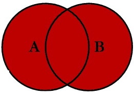
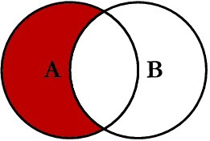
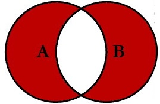

Topic 3.1 - 表连接¶
1. 表连接的概念¶
表连接是关系型数据库中最重要的操作：
- 之前我们讲过，为了降低冗余和提高一致性，关系型数据库的数据存储通常是一个大表拆小表的过程
- 而为了数据分析与汇报工作，我们又需要反着来，小表合大表，因为我们通常需要从多个表中获取数据来进行分析和汇报
表连接的概念，我们之前其实介绍过，这里我们通过以下例子再回顾一下：

- 上图中，我们有两个表，一个表中包含的列是姓名和班级，另一个表中包含的列是班级和班主任
- 我们可以通过
班级这个公共列，将两个表连接在一起，得到一个新的表，这个新表中包含了姓名、班级和班主任三列
表连接有以下一些类型，我们将在后面的小节中详细讲解：
-
使用比较多的场景是一种内连接和三种外连接：
- 内连接（Inner Join）：返回两个表中匹配的行
- 左外连接（Left Outer Join）：返回左表中的所有行以及右表中匹配的行，在左表中但不在右表中的行会显示为NULL
- 右外连接（Right Outer Join）：返回右表中的所有行以及左表中匹配的行，在右表中但不在左表中的行会显示为NULL
- 全外连接（Full Outer Join）：返回两个表中的所有行，匹配的行会合并，在左表中但不在右表中的行会显示为NULL，在右表中但不在左表中的行也会显示为NULL
-
使用频率较低的一些连接是：
-
反连接：
- 左反连接（Left Anti Join）：只要在左表中存在但在右表中不存在的行
- 右反连接（Right Anti Join）：只要在右表中存在但在左表中不存在的行
- 全反连接（Full Anti Join）：只要在左表中存在但在右表中不存在的行，与在右表中存在但在左表中不存在的行
-
交叉连接（Cross Join）：返回两个表的笛卡尔积，即每一行左表与每一行右表的组合
- 自连接（Self Join）：将一个表与其自身进行连接，通常需要使用表别名来区分同一张表的不同实例
-
2. 表连接常见的方式¶
连接方式这个概念，是建立在两表连接键（公共列）上，决定如何连接两表的规则，我们这里先来介绍一些常见的连接方式。
(1) 内连接（Inner Join）¶
(a) 内连接的定义¶
内连接（Inner Join）：只保留两个表中连接键匹配的行：
- 使用集合来表示，内连接就是两个表连接键的交集：

- 回到班级的这个例子中，一个内连接的例子可以用下图来表示：

-
通过内连接，我们只保留了两个表中
班级列匹配的行：- 左表中
Alice、Bob和Charlie三行的班级分别是四班、四班和六班，在右表中没有对应的班级，所以这三行被丢弃了 - 右表中，
五班的班主任老E，在左表中没有对应的班级，所以这一行也被丢弃了
- 左表中
(b) 内连接的 SQL 语法¶
在 SQL 中，内连接使用 JOIN 或 INNER JOIN 关键字来实现，语法如下：
SELECT 列名1, 列名2, ...
FROM 表1
JOIN 表2 ON 表1.连接键 = 表2.连接键;
SELECT 列名1, 列名2, ...
FROM 表1
INNER JOIN 表2 ON 表1.连接键 = 表2.连接键;
- 在 SQL 中，
FROM语句和JOIN语句共同构成了“从哪个表选取数据”的逻辑 - 在大家公认的 SQL 规范中，
FROM和JOIN各占一行，FROM语句后面跟着第一个表，JOIN语句后面跟着第二个表，ON语句后面跟着连接条件 - 我们在 Cinook 数据库中，把
Artist表和Album表进行内连接，查询每张专辑的艺术家名字：
%%sql
SELECT TOP 5 *
FROM Album
JOIN Artist ON Album.ArtistId = Artist.ArtistId
| | AlbumId | Title | ArtistId | ArtistId.1 | Name |
|:--|:--------|:--------------------------------------|:---------|:-----------|:----------|
| 0 | 1 | For Those About To Rock We Salute You | 1 | 1 | AC/DC |
| 1 | 2 | Balls to the Wall | 2 | 2 | Accept |
| 2 | 3 | Restless and Wild | 2 | 2 | Accept |
| 3 | 4 | Let There Be Rock | 1 | 1 | AC/DC |
| 4 | 5 | Big Ones | 3 | 3 | Aerosmith |
大家会发现，两个表连接后，如果使用 SELECT * 来查询，结果中会包含两个表中所有的列，这时候就会有一些重复的列
- 比如上面这个例子中，连接键
ArtistId就在两个表中都存在，所以结果中就会有两列ArtistId - 这时候我们，我们就需要在
SELECT语句中明确指定我们需要查询的列 - 如果有重名的列，例如两个表中都有
ArtistID这一列，这时候就需要使用表名.列名的方式来指定具体是哪个表的，避免报错：
%%sql
SELECT TOP 5
AlbumId,
Title,
Artist.ArtistId,
Name
FROM Album
JOIN Artist ON Album.ArtistId = Artist.ArtistId
| | AlbumId | Title | ArtistId | Name |
|:--|:--------|:--------------------------------------|:---------|:-----------|
| 0 | 1 | For Those About To Rock We Salute You | 1 | AC/DC |
| 1 | 2 | Balls to the Wall | 2 | Accept |
| 2 | 3 | Restless and Wild | 2 | Accept |
| 3 | 4 | Let There Be Rock | 1 | AC/DC |
| 4 | 5 | Big Ones | 3 | Aerosmith |
事实上，我们推荐大家，所有的列，不论是否重名 表名.列名 的的方式来指定列
- 这样做的好处是，代码更清晰，明确了每一列来自哪个表
- 不仅可以避免歧义，也可以避免因为重名列而导致的错误，对于人和机器来说都是更友好的：
%%sql
SELECT TOP 5
Album.AlbumId,
Album.Title,
Artist.ArtistId,
Artist.Name
FROM Album
JOIN Artist ON Album.ArtistId = Artist.ArtistId
| | AlbumId | Title | ArtistId | Name |
|:--|:--------|:--------------------------------------|:---------|:-----------|
| 0 | 1 | For Those About To Rock We Salute You | 1 | AC/DC |
| 1 | 2 | Balls to the Wall | 2 | Accept |
| 2 | 3 | Restless and Wild | 2 | Accept |
| 3 | 4 | Let There Be Rock | 1 | AC/DC |
| 4 | 5 | Big Ones | 3 | Aerosmith |
在表连接中，我们还可以给表起别名，使用的语法是 表名 AS 表别名：
- 给表起别名后，在指定连接键，与查询列的时候，就需要使用别名来代替表名
- 注意，大家会看到很多人写别名的时候会省略
AS这个关键字，直接写成表名 表别名，虽然会影响代码运行，但我们不推荐大家这么写，因为这样会降低代码的可读性：
%%sql
SELECT TOP 5
A.AlbumId,
A.Title,
T.ArtistId,
T.Name
FROM Album AS A
JOIN Artist AS T ON A.ArtistId = T.ArtistId
| | AlbumId | Title | ArtistId | Name |
|:--|:--------|:--------------------------------------|:---------|:-----------|
| 0 | 1 | For Those About To Rock We Salute You | 1 | AC/DC |
| 1 | 2 | Balls to the Wall | 2 | Accept |
| 2 | 3 | Restless and Wild | 2 | Accept |
| 3 | 4 | Let There Be Rock | 1 | AC/DC |
| 4 | 5 | Big Ones | 3 | Aerosmith |
除此之外，给列起别名也是可以的，使用的语法是 列名 AS 列别名：
%%sql
SELECT TOP 5
A.AlbumId AS AlbumId,
A.Title AS AlbumTitle,
T.ArtistId AS ArtistId,
T.Name AS ArtistName
FROM Album AS A
JOIN Artist AS T ON A.ArtistId = T.ArtistId
| | AlbumId | AlbumTitle | ArtistId | ArtistName |
|:---|:--------|:--------------------------------------|:---------|:----------|
| 0 | 1 | For Those About To Rock We Salute You | 1 | AC/DC |
| 1 | 2 | Balls to the Wall | 2 | Accept |
| 2 | 3 | Restless and Wild | 2 | Accept |
| 3 | 4 | Let There Be Rock | 1 | AC/DC |
| 4 | 5 | Big Ones | 3 | Aerosmith |
在表连接的语法的其他的 SQL 语句中，如 WHERE、GROUP BY、ORDER BY 等语句的规则，和我们之前讲的规则是相似的
WHERE语句中的列名必须使用原列名，但是表名可以使用表别名，也就是表别名.列原名的方式来指定列，这个一定要注意GROUP BY语句也是一样的，列名必须使用原列名，表名可以使用表别名，也就是表别名.列原名的方式来指定列ORDER BY语句比较特殊，它是可以使用列别名的
%%sql
SELECT TOP 5
A.AlbumId AS AlbumId,
A.Title AS AlbumTitle,
T.ArtistId AS ArtistId,
T.Name AS ArtistName
FROM Album AS A
JOIN Artist AS T ON A.ArtistId = T.ArtistId
WHERE A.Title LIKE '%Love%'
ORDER BY ArtistName
| | AlbumId | AlbumTitle | ArtistId | ArtistName |
|:--|:--------|:---------------------------------------------------------------------------------|:---------|:-----------|
| 0 | 213 | Pure Cult: The Best Of The Cult \(For Rockers, Ravers, Lovers & Sinners\) \[UK\] | 139 | The Cult |
(2) 左连接¶
(a) 左连接的定义¶
左连接（Left Join）也叫左外连接（Left Outer Join）：左表是老大，保留左表的所有行，在左表但不在右表中的键用 NaN 填充
- 使用集合来表示，左连接就是左表连接键的全集：

- 回到班级的这个例子中，一个左连接的例子可以用下图来表示：

-
通过左连接，我们保留了左表中的所有行：
- 左表中
Alice、Bob和Charlie三行的班级分别是四班、四班和六班，在右表中没有对应的班级，所以这三行的班主任列被填充为 NaN - 右表中，
五班的班主任老E，在左表中没有对应的班级，所以这一行被丢弃了
- 左表中
(b) 左连接的 SQL 语法¶
在 SQL 中，左连接使用 LEFT JOIN 或 LEFT OUTER JOIN 关键字来实现，语法如下：
SELECT 列名1, 列名2, ...
FROM 表1
LEFT JOIN 表2 ON 表1.连接键 = 表2.连接键;
例如，我们在 Cinook 数据库中，把 Artist 表和 Album 表进行左连接，查询每张专辑的艺术家名字：
%%sql
SELECT TOP 5
A.AlbumId,
A.Title,
T.ArtistId,
T.Name
FROM Album AS A
LEFT JOIN Artist AS T ON A.ArtistId = T.ArtistId
| | AlbumId | Title | ArtistId | Name |
|:--|:--------|:--------------------------------------|:---------|:-----------|
| 0 | 1 | For Those About To Rock We Salute You | 1 | AC/DC |
| 1 | 2 | Balls to the Wall | 2 | Accept |
| 2 | 3 | Restless and Wild | 2 | Accept |
| 3 | 4 | Let There Be Rock | 1 | AC/DC |
| 4 | 5 | Big Ones | 3 | Aerosmith |
(3) 右连接¶
(a) 右连接的定义¶
右连接（Right Join）也叫右外连接（Right Outer JOIN）：右表是老大，保留右表的所有行，在右表但不在左表中的键用 NaN 填充
- 使用集合来表示，右连接就是右表连接键的全集：

- 回到班级的这个例子中，一个右连接的例子可以用下图来表示：

-
通过右连接，我们保留了右表中的所有行：
- 左表中
Alice、Bob和Charlie三行的班级分别是四班、四班和六班，在右表中没有对应的班级，所以这三行被丢弃了 - 右表中，
五班的班主任老E，在左表中没有对应的班级，所以这一行的姓名列被填充为 NaN
- 左表中
(b) 右连接的 SQL 语法¶
在 SQL 中，右连接使用 RIGHT JOIN 或 RIGHT OUTER JOIN 关键字来实现，语法如下：
SELECT 列名1, 列名2, ...
FROM 表1
RIGHT JOIN 表2 ON 表1.连接键 = 表2.连接键;
例如，我们在 Cinook 数据库中，把 Artist 表和 Album 表进行右连接，查询每张专辑的艺术家名字：
%%sql
SELECT TOP 5
A.AlbumId,
A.Title,
T.ArtistId,
T.Name
FROM Album AS A
RIGHT JOIN Artist AS T ON A.ArtistId = T.ArtistId
| | AlbumId | Title | ArtistId | Name |
|:--|:--------|:--------------------------------------|:---------|:----------|
| 0 | 1 | For Those About To Rock We Salute You | 1 | AC/DC |
| 1 | 4 | Let There Be Rock | 1 | AC/DC |
| 2 | 2 | Balls to the Wall | 2 | Accept |
| 3 | 3 | Restless and Wild | 2 | Accept |
| 4 | 5 | Big Ones | 3 | Aerosmith |
(4) 全外连接¶
(a) 全外连接的定义¶
全外连接（Full Outer Join）：左连接和右连接的结合，保留两个表中的所有行，不匹配的键用 NaN 填充
- 使用集合来表示，外连接就是两个表连接键的并集：

- 回到班级的这个例子中，一个外连接的例子可以用下图来表示：

-
通过外连接，我们保留了两个表中的所有行：
- 左表中
Alice、Bob和Charlie三行的班级分别是四班、四班和六班，在右表中没有对应的班级，所以这三行的班主任列被填充为 NaN - 右表中，
五班的班主任老E，在左表中没有对应的班级，所以这一行的姓名列被填充为 NaN
- 左表中
(b) 外连接的 SQL 语法¶
在 SQL 中，外连接使用 FULL OUTER JOIN 关键字来实现，语法如下：
SELECT 列名1, 列名2, ...
FROM 表1
FULL OUTER JOIN 表2 ON 表1.连接键 = 表2.连接键;
例如，我们在 Cinook 数据库中，把 Artist 表和 Album 表进行外连接，查询每张专辑的艺术家名字：
%%sql
SELECT TOP 5
A.AlbumId,
A.Title,
T.ArtistId,
T.Name
FROM Album AS A
FULL OUTER JOIN Artist AS T ON A.ArtistId = T.ArtistId
| | AlbumId | Title | ArtistId | Name |
|:---|:--------|:--------------------------------------|:---------|:----------|
| 0 | 1 | For Those About To Rock We Salute You | 1 | AC/DC |
| 1 | 2 | Balls to the Wall | 2 | Accept |
| 2 | 3 | Restless and Wild | 2 | Accept |
| 3 | 4 | Let There Be Rock | 1 | AC/DC |
| 4 | 5 | Big Ones | 3 | Aerosmith |
3. 表连接的进阶情况¶
(1) 多键连接¶
多键连接是指在连接两个表时，使用多个列作为连接键，而不是单一的列：
- 多键连接的应用情景是，有的时候数据的标识信息可能不止一个列能够唯一标识，这时候就需要使用多个列来进行连接
- 比方说，假设我们将学生表修改修改，班级的标识要使用
年级和班级两列来共同标识：

我们在 SQL 中使用多键连接的语法也比较简单，我们只需要在 ON 语句中依次加入多个连接条件即可：
SELECT 列名1, 列名2, ...
FROM 表1
JOIN 表2 ON 表1.连接键1 = 表2.连接键1 AND 表1.连接键2 = 表2.连接键2;
我们在 Chinook 数据库中，把 Artist 表和 Album 表进行内连接，查询每张专辑的艺术家名字，这次我们假设连接键是 ArtistId 和 Title 两列：
%%sql
SELECT TOP 5
A.AlbumId,
A.Title,
T.ArtistId,
T.Name
FROM Album AS A
JOIN Artist AS T ON A.ArtistId = T.ArtistId AND A.Title = T.Name
| | AlbumId | Title | ArtistId | Name |
|:--|:--------|:--------------|:---------|:--------------|
| 0 | 10 | Audioslave | 8 | Audioslave |
| 1 | 16 | Black Sabbath | 12 | Black Sabbath |
| 2 | 18 | Body Count | 13 | Body Count |
| 3 | 100 | Iron Maiden | 90 | Iron Maiden |
| 4 | 166 | Olodum | 112 | Olodum |
(2) 多表连接¶
多表连接是指在连接两个表的基础上，再连接第三个表，甚至更多的表：
- 多表连接看似复杂，其实大家把它想象为两步就好了
- 第一步，把表1和表2连接在一起，得到一个新表，第二步，把这个新表和表3连接在一起，得到最终的结果表
比方说，我们在学生表和班主任表基础上，再加个家长表：

- 要想把这三张表拼在一起，我们就可以先把学生表和家长表进行连接，得到一个新表：

- 然后再把这个新表和班主任表进行连接，得到最终的结果表：

在 SQL 中，多表连接的语法也比较简单，我们只需要在 FROM 语句中依次加入 JOIN 语句即可：
- 我们这里用内连接举例，当然多表连接也可以使用左连接、右连接和外连接，语法也是类似的：
- 当我们的表越多的时候，更需要清楚地使用表别名和列别名，避免代码冗长和混乱：
SELECT 列名1, 列名2, ...
FROM 表1
JOIN 表2 ON 表1.连接键 = 表2.连接键
JOIN 表3 ON 表2.连接键 = 表3.连接键;
我们在 Cinook 数据库中，把 Artist 表、Album 表和 Track 表进行内连接，查询每首歌的艺术家名字：
%%sql
SELECT TOP 5
T.TrackId AS TrackId,
T.Name AS TrackName,
L.AlbumId AS AlbumId,
L.Title AS AlbumTitle,
A.ArtistId AS ArtistId,
A.Name AS ArtistName
FROM Track AS T
JOIN Album AS L ON T.AlbumId = L.AlbumId
JOIN Artist AS A ON L.ArtistId = A.ArtistId
| | TrackId | TrackName | AlbumId | AlbumTitle | ArtistId | ArtistName |
|:--|:--------|:------------------------------------------|:--------|:--------------------------------------|:---------|:------------|
| 0 | 1 | For Those About To Rock \(We Salute You\) | 1 | For Those About To Rock We Salute You | 1 | AC/DC |
| 1 | 2 | Balls to the Wall | 2 | Balls to the Wall | 2 | Accept |
| 2 | 3 | Fast As a Shark | 3 | Restless and Wild | 2 | Accept |
| 3 | 4 | Restless and Wild | 3 | Restless and Wild | 2 | Accept |
| 4 | 5 | Princess of the Dawn | 3 | Restless and Wild | 2 | Accept |
4. 特殊的表连接方式¶
上面四种连接方式是比较常见的连接方式，除此之外，还有一些特殊的连接方式，使用场景相对较少，这里我们简单介绍一下。
(1) 反连接¶
(a) 左反连接¶
左反连接（Left Anti Join）：只保留左表中不在右表中的行
- 从集合的角度来看，左反连接就是左连接的基础上，去掉了交集部分：

- 回到班级的这个例子中，一个左反连接的例子可以用下图来表示：

- 通过左反连接，我们只保留了左表中的特有行
在 Azure SQL 数据库中，没有一个直接的 SQL 语法来实现左反连接，但是我们可以通过使用 LEFT JOIN 和 WHERE 语句来实现：
SELECT 列名1, 列名2, ...
FROM 表1
LEFT JOIN 表2 ON 表1.连接键 = 表2.连接键
WHERE 表2.连接键 IS NULL;
我们来看一个例子：在 Cinook 数据库中，将 Track 表和 InvoiceLine 表进行左反连接，查询没有被卖出过的歌曲：
%%sql
SELECT TOP 10
T.TrackId,
T.Name
FROM Track AS T
LEFT JOIN InvoiceLine AS IL ON T.TrackId = IL.TrackId
WHERE IL.TrackId IS NULL;
| | TrackId | Name |
|:--|:--------|:---------------------------|
| 0 | 7 | Let's Get It Up |
| 1 | 11 | C.O.D. |
| 2 | 17 | Let There Be Rock |
| 3 | 18 | Bad Boy Boogie |
| 4 | 22 | Whole Lotta Rosie |
| 5 | 23 | Walk On Water |
| 6 | 27 | Dude \(Looks Like A Lady\) |
| 7 | 29 | Cryin' |
| 8 | 33 | The Other Side |
| 9 | 34 | Crazy |
(b) 右反连接¶
右反连接（Right Anti Join）：只保留右表中不在左表中的行
- 从集合的角度来看，右反连接就是右连接的基础上，去掉了交集部分：

- 回到班级的这个例子中，一个右反连接的例子可以用下图来表示：

- 通过右反连接，我们只保留了右表中的特有行
同样，在 Azure SQL 数据库中，没有一个直接的 SQL 语法来实现右反连接，但是我们可以通过使用 RIGHT JOIN 和 WHERE 语句来实现：
SELECT 列名1, 列名2, ...
FROM 表1
RIGHT JOIN 表2 ON 表1.连接键 = 表2.连接键
WHERE 表1.连接键 IS NULL;
我们还是查询没有被卖出过的歌曲，不过这次我们把 Track 表放在右边，InvoiceLine 表放在左边，这样就可以使用右反连接来查询没有被卖出过的歌曲了：
%%sql
SELECT TOP 10
T.TrackId,
T.Name
FROM InvoiceLine AS IL
RIGHT JOIN Track AS T ON IL.TrackId = T.TrackId
WHERE IL.TrackId IS NULL;
| | TrackId | Name |
|:---|:--------|:---------------------------|
| 0 | 7 | Let's Get It Up |
| 1 | 11 | C.O.D. |
| 2 | 17 | Let There Be Rock |
| 3 | 18 | Bad Boy Boogie |
| 4 | 22 | Whole Lotta Rosie |
| 5 | 23 | Walk On Water |
| 6 | 27 | Dude \(Looks Like A Lady\) |
| 7 | 29 | Cryin' |
| 8 | 33 | The Other Side |
| 9 | 34 | Crazy |
(c) 全反连接¶
全反连接（Full Anti Join）：只保留两个表中不匹配的行，可以看作左反连接和右反连接的结合
- 从集合的角度来看，全反连接就是外连接的基础上，去掉了交集部分：

- 回到班级的这个例子中，一个全反连接的例子可以用下图来表示：

- 通过全反连接，我们只保留了两个表中的特有行
同样，在 Azure SQL 数据库中，没有一个直接的 SQL 语法来实现全反连接，但是我们可以通过使用 FULL OUTER JOIN 和 WHERE 语句来实现：
SELECT 列名1, 列名2, ...
FROM 表1
FULL OUTER JOIN 表2 ON 表1.连接键 = 表2.连接键
WHERE 表1.连接键 IS NULL OR 表2.连接键 IS NULL;
我们来看这个例子：在 Cinook 数据库中，将 Employee 表和 Customer 表进行全反连接，查询没有对接员工的客户，与没有对接客户的员工：
%%sql
SELECT TOP 10
E.FirstName AS EmployeeFirstName,
E.LastName AS EmployeeLastName,
C.FirstName AS CustomerFirstName,
C.LastName AS CustomerLastName
FROM Employee AS E
FULL OUTER JOIN Customer AS C ON E.EmployeeId = C.SupportRepId
WHERE E.EmployeeId IS NULL OR C.SupportRepId IS NULL;
| | EmployeeFirstName | EmployeeLastName | CustomerFirstName | CustomerLastName |
|:--|:------------------|:-----------------|:------------------|:-----------------|
| 0 | Andrew | Adams | NaN | NaN |
| 1 | Nancy | Edwards | NaN | NaN |
| 2 | Michael | Mitchell | NaN | NaN |
| 3 | Robert | King | NaN | NaN |
| 4 | Laura | Callahan | NaN | NaN |
(2) 交叉连接¶
交叉连接（Cross Join）：返回两个表的笛卡尔积，即每一行左表与每一行右表的组合
- 比方说我们有以下两个表：

- 这两个表的交叉连接结果如下：

-
我们可以看到，交叉连接其实和大家理解的表连接有点不一样
- 交叉连接不像一种连接数据的形式，而是创建新数据的方式
- 而且交叉连接可以不按照数据库设计时的连接键来连接两个表，甚至不用强调连接键，直接把两个表的每一行进行组合，得到一个新的表
- 并且交叉连接的时候一定要提前考虑，这样连接有没有意义，不然很可能像上面这个例子一样，得到一个意义不明的员工和商品的两两匹配表
在 Azure SQL 数据库中，交叉连接使用 CROSS JOIN 关键字来实现，语法如下：
SELECT 列名1, 列名2, ...
FROM 表1
CROSS JOIN 表2
WHERE 条件
这里我们看个例子，将员工表中销售部门的员工和客户表进行交叉连接，查询每个销售部门的员工和每个客户的组合：
%%sql
SELECT
E.FirstName + ' ' + E.LastName AS EmployeeName,
C.FirstName + ' ' + C.LastName AS CustomerName
FROM Employee AS E
CROSS JOIN Customer AS C
WHERE E.Title LIKE '%Sales%';
| | EmployeeName | CustomerName |
|:----|:--------------|:----------------------|
| 0 | Nancy Edwards | Luís Gonçalves |
| 1 | Nancy Edwards | Leonie Köhler |
| 2 | Nancy Edwards | François Tremblay |
| 3 | Nancy Edwards | Bjørn Hansen |
| 4 | Nancy Edwards | František Wichterlová |
| 5 | Nancy Edwards | Helena Holý |
| ... | ... | ... |
| 231 | Steve Johnson | Mark Taylor |
| 232 | Steve Johnson | Diego Gutiérrez |
| 233 | Steve Johnson | Luis Rojas |
| 234 | Steve Johnson | Manoj Pareek |
| 235 | Steve Johnson | Puja Srivastava |
(3) 自连接¶
自连接就是把一个表和它自己进行连接，常用于一个表有自引用关系的情况：
- 例如在 Chinook 数据库中，
Employee表中有一个ReportsTo列，这个列是一个外键，指向EmployeeId列，表示员工的上级是谁 - 这时候我们就可以通过自连接来查询每个员工的名字和他上级的名字
%%sql
SELECT
E1.FirstName + ' ' + E1.LastName AS EmployeeName,
E2.FirstName + ' ' + E2.LastName AS ManagerName
FROM Employee AS E1
LEFT JOIN Employee AS E2 ON E1.ReportsTo = E2.EmployeeId;
| | EmployeeName | ManagerName |
|:--|:-----------------|:-----------------|
| 0 | Andrew Adams | NaN |
| 1 | Nancy Edwards | Andrew Adams |
| 2 | Jane Peacock | Nancy Edwards |
| 3 | Margaret Park | Nancy Edwards |
| 4 | Steve Johnson | Nancy Edwards |
| 5 | Michael Mitchell | Andrew Adams |
| 6 | Robert King | Michael Mitchell |
| 7 | Laura Callahan | Michael Mitchell |
注意，自连接其实也分内连接、左连接、右连接、全外连接等不同的连接方式
-
这里大家可以把自连接表想象成就是普通的对两个表进行的连接操作，只不过两个表长得一样而已
-
例如上面的例子中，我们把
Employee表想象成两个表，一个是员工表，另一个是经理表，这样我们就可以使用内连接、左连接、右连接和外连接来进行自连接了：- 如果进行内连接，那么我们就只能查询到有上级的员工和他们的上级的名字，没上级的员工就被丢弃了
- 如果进行左连接，那么我们就可以查询到所有员工的名字，没上级的员工的上级名字会被填充为 NaN
- 如果进行右连接，那么我们就可以查询到所有上级的名字，没下级的上级名字会被填充为 NaN
- 如果进行全外连接，那么我们就可以查询到所有员工的名字和所有上级的名字，没上级的员工的上级名字会被填充为 NaN，没下级的上级名字也会被填充为 NaN